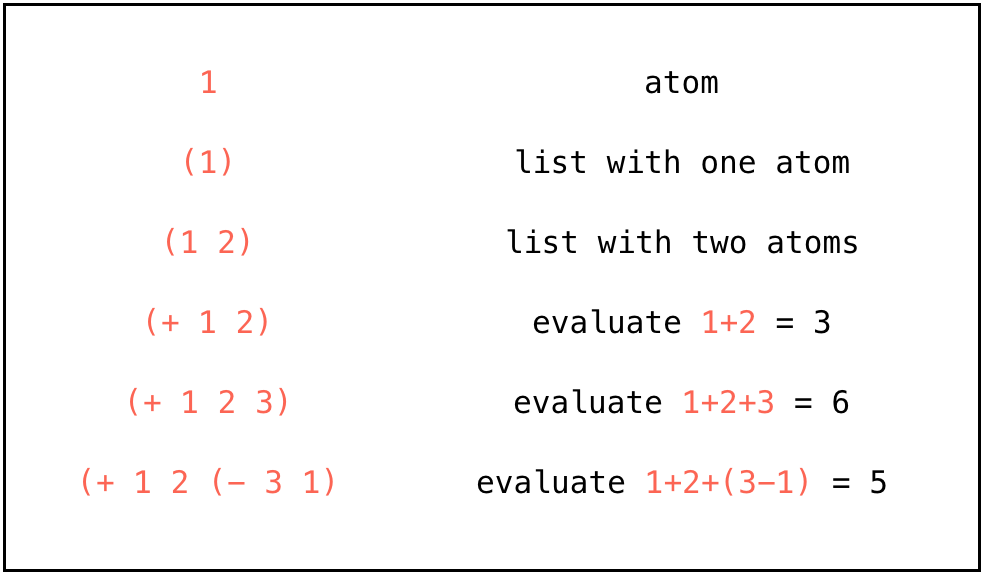
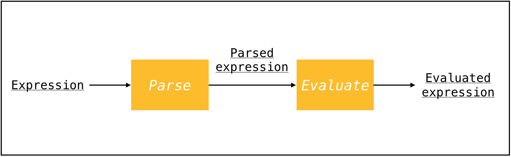
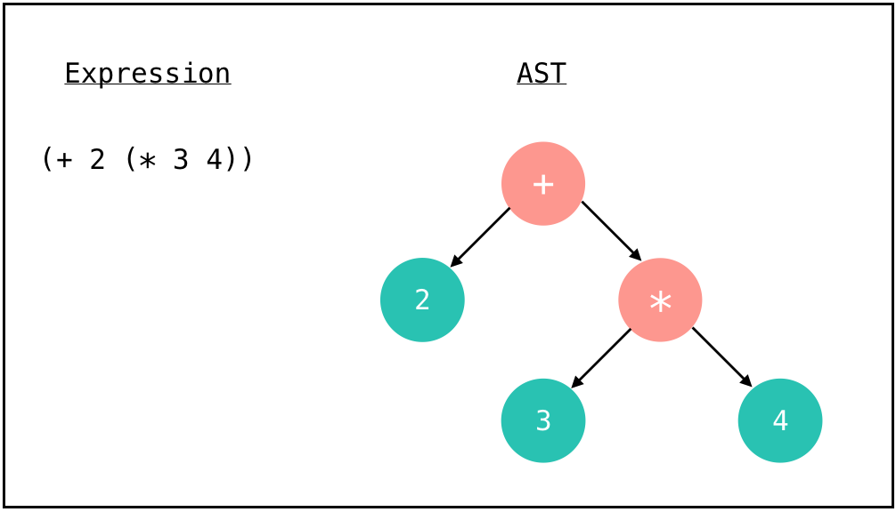
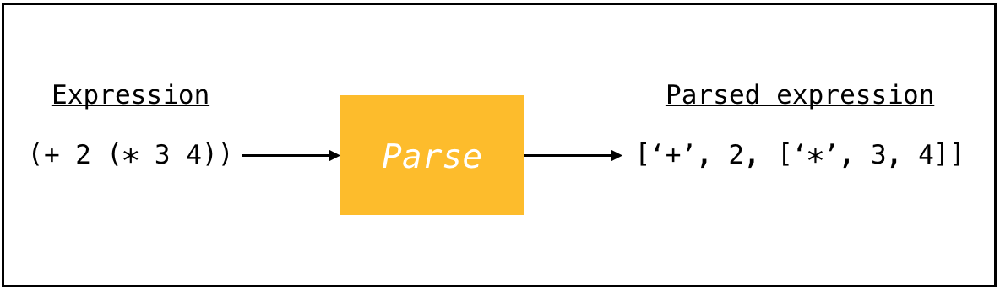
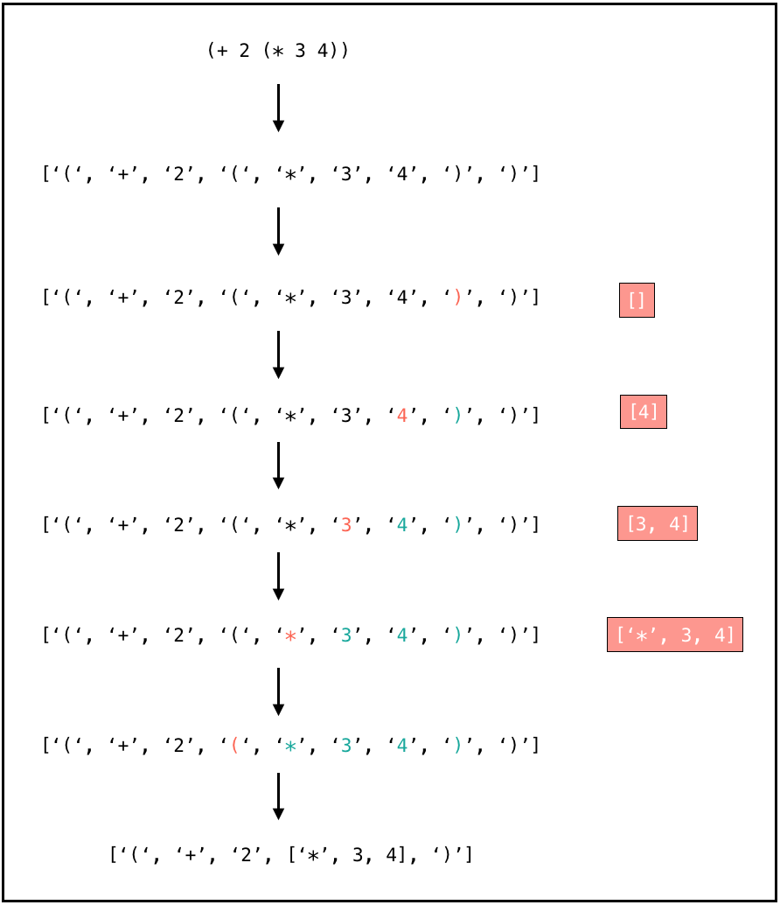
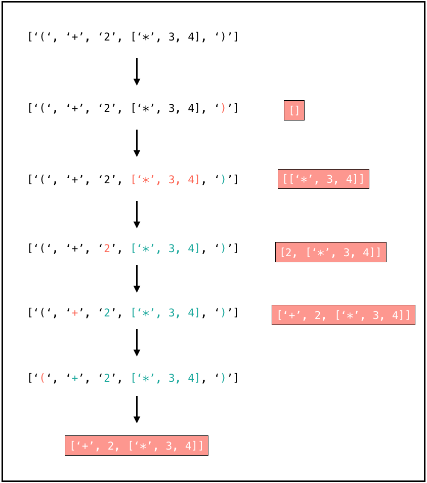
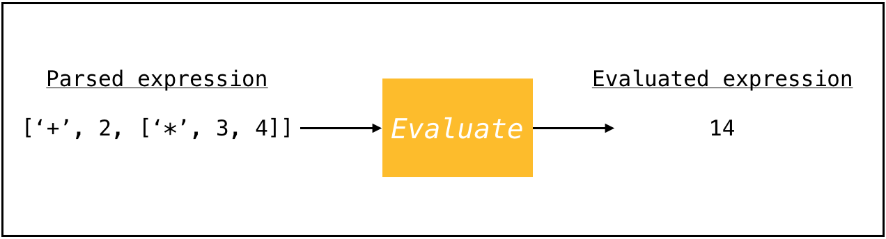
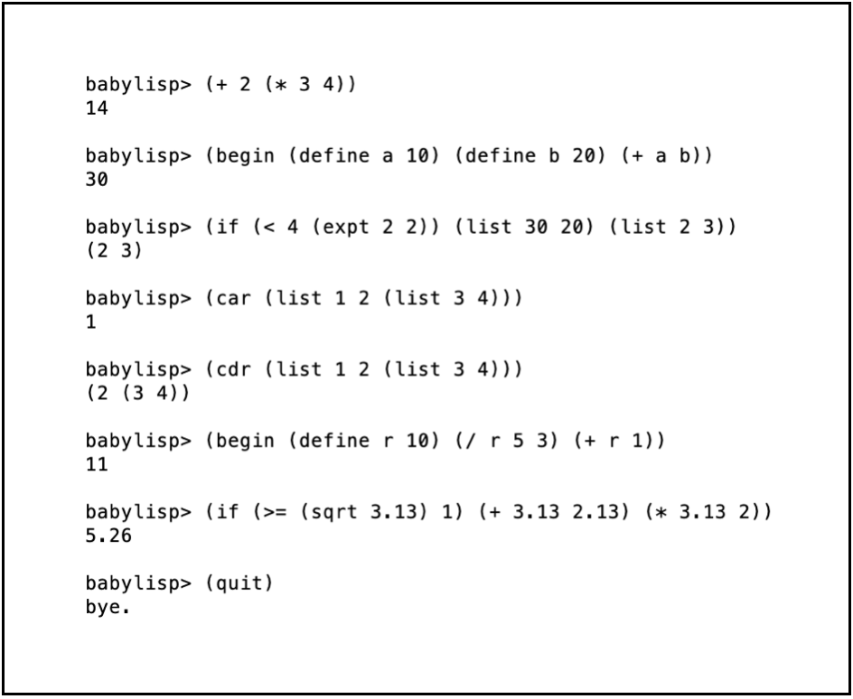

A very simple Lisp interpreter.
To understand more about how our computers take the code we write and figure out what it means, I built a little interpreter in Python called Baby Lisp, which evaluates expressions written in the Lisp dialect Scheme.
Lisps are elegant programming languages made up of expressions in brackets. Here are some Lisp expressions and what they mean:
Scheme is a language that belongs to the Lisp family. Each Lisp dialect has a slightly different syntax. Our aim is to build an interpreter for Scheme, which means we want it to execute code written in Scheme. To make our job easier, we're only going to do this for a super simplified version of Scheme.
Making an interpreter involves two steps: parsing and evaluating our input expression. We'll go through what these steps are, and how to code them.
Parsing an expression means figuring out what our code is trying to do, according to the rules of our programming language. For this, we need to build up an abstract syntax tree (AST), which is a data structure that represents our program. This tells us the order in which each of the terms in our expression should be evaluated.
The AST is made up of nodes that represent operations, each of which has children that represent the arguments that operation is applied to. For example, the figure below shows a Scheme expression and its AST:
Our aim is to create a parser that can take as input any Scheme expression, and output a nested list that represents the AST. This will tell us which operations are applied to which arguments, and in what order! Going back to the above example expression, we want our parser to work as follows:
To do this, we should first split the expression up into chunks. Then, we can check if it's a valid expression (for example, does it start and end with brackets? Does it contain unbalanced brackets?), and raise an error if so. Otherwise, we're ready to start parsing it, chunk by chunk!
Let's read the expression from the beginning, until we encounter our first closing bracket ). Then, we can walk backwards through the expression, until we get to the first opening bracket (, which tells us we've found a complete sub-expression. On our way to the opening bracket, we're going to add each element we see to a new list. If the element is numeric, we'll convert it to the corresponding int or float. Once we reach the opening bracket (indicating the start of that sub-expression), we're going to insert the new list we've created in the place of that sub-expression. By repeating this for the whole expression, we can build up our nested list AST!
As an example, let's go through how this would work for the expression we saw before. We'll start by chopping up our expression into chunks, and looking at the first sub-expression:
Now let's keep going till we get to the end of the next expression (the next closing bracket):
As you can see, this gives us the parsed output we wanted! In this way, we can parse any valid Scheme expression and build up our AST.
Now that we have our parsed expression, how do we actually evaluate it? We want to take the nested list we've created and perform the computation it's telling us to do. Once we've done this, we'll have built an interpreter!
Let's start by noting that we need to separate the expression into a function (what operation we should do) and a list of arguments (what we apply the operation on). We're going to make a basic interpreter that supports arithmetic operations, conditional statements, and a few others like define, begin, list, car and cdr.
The arguments in our expression could be numbers or symbols. If they're numbers, then we don't need to do anything more to them, as it's clear what they represent. But if they're symbols, they might have some assigned value. To take this into account, we're going to use a Python dictionary to store values of symbols. So, when we encounter a list of arguments that a function acts on, we first need to look up any symbolic arguments in the dictionary to check if they've been assigned a value.
Now we're ready to figure out how each of our functions should act on their list of arguments! For arithmetic operations like +, -, * and /, this is super easy. Applying + (or *) to a list of arguments adds up (or multiplies) all the arguments. Applying - (or /) to a list with only one argument returns the negative (the inverse) of that argument, while applying - (or /) to a list with more than one argument returns the first argument minus (or divided by) all the other arguments. In a similar way, we can define the functionality of the =, <, ≤, >, ≥, expt, sqrt, max, min and abs operations on any list of arguments.
Let's move on to some more interesting functions, starting with the if statement. The Scheme syntax for this is (if test conseq1 conseq2). This means that we should first evaluate test, and if it's True, we return conseq1; otherwise, we return conseq2. To implement this function, we simply need to first check if we have three arguments, check if the first argument is True, and then return the second argument if it is, or return the third argument if it's not.
Another commonly used function is define, which assigns a value to a symbol. Its syntax is (define var x), telling us that the variable var has the value x. For this, we'll use our dictionary, mapping the first argument (which is the key) to the second argument (which stores its value).
The begin statement is used to calculate a sequence of expressions and return the last result. For example, (begin (define a 10) (+ a 1)) should first define the variable a to be 10, then evaluate and return (+ a 1), which gives 11. So if we encounter a begin statement as our operation, we just need to return the last argument.
The list statement is another simple one, which just returns the arguments as a list. And finally, let's implement the car and cdr operations: the car statement just returns the first element of a list, while the cdr statement returns all elements of a list except for the first.
Now, we've defined how all our functions behave. We're still missing one thing, though: how do we deal with nested expressions? We should actually evaluate every term in our parsed expression using recursion. If the element we're evaluating is an atom, we can just return it (if it's a symbol, remember to check in the dictionary if it has a value!). But if it's a list, we need to keep running our evaluation function recursively, until we've evaluated all its terms.
And that's all there is to Baby Lisp! We can now feed it a Scheme expression, which it will parse and then evaluate to spit out an answer.
Let's see Baby Lisp in action!
